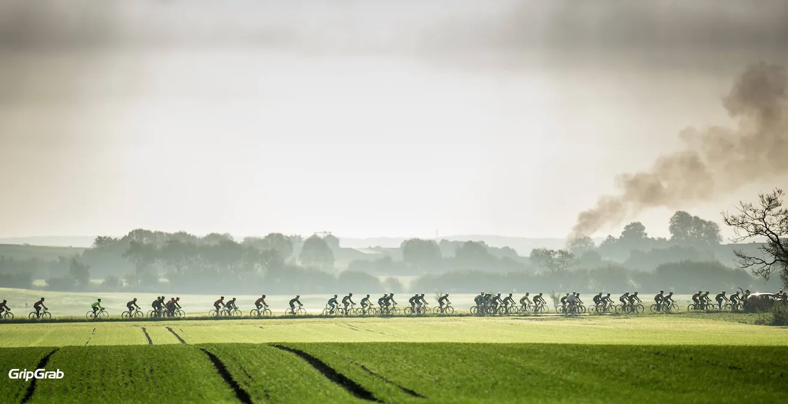

Derfor er Squadra Molteni “Il Treno Arancione Espresse”

Nogle gange får vi spørgsmålet: hvorfor kalder i jer for Det Orange Eksprestog? Svaret er enkelt.
“Il Treno Arancione Espresso” – Det Orange Eksprestog Vi får mange anerkendende smil, venlige blikke og positive kommentarer når vi er ude til løb.
Svaret er her: Et flot billede taget af GripGrab Media Crew | Martin Paldan & Mikkel Beisner i forbindelse med DGI Gran Fondo Munkebjerg 2015.

Her ses det tydeligt, hvorfor Squadra Molteni er “Il Treno Arancione Espresso” (Det Orange Eksprestog).
Billede viser den bagerste del af 80 km-distancefeltet, der passerer Thure, som giver løbet frit.
Niels Bjørnsteen og Grane Maaløe ér allerede stukket – og trække fra for fuld damp ude i det fjerne…
Il Treno Arancione Espresso